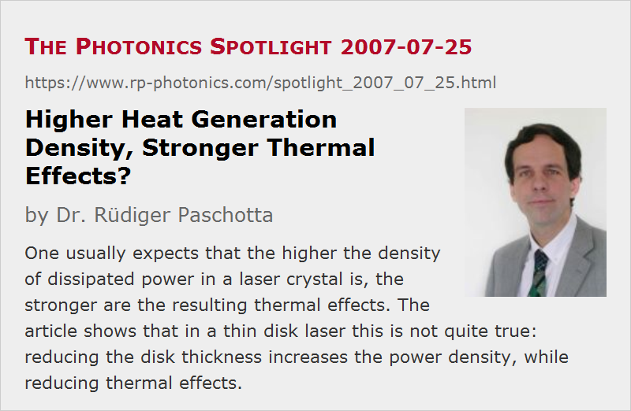

Higher Heat Generation Density, Stronger Thermal Effects?
Posted on 2007-07-25 as a part of the Photonics Spotlight (available as e-mail newsletter!)
Permanent link: https://www.rp-photonics.com/spotlight_2007_07_25.html
Author: Dr. Rüdiger Paschotta, RP Photonics Consulting GmbH
Abstract: One usually expects that the higher the density of dissipated power in a laser crystal is, the stronger are the resulting thermal effects. The article shows that in a thin disk laser this is not quite true: reducing the disk thickness increases the power density, while reducing thermal effects.

Ref.: encyclopedia articles on thin-disk lasers and thermal lensing
It is common wisdom (and seems pretty plausible) that the density of dissipated power in a laser crystal should be kept low enough to avoid excessive thermal effects, such as thermal lensing. In this light, it may appear unlikely that the concentration of the dissipated power in a rather thin disk of crystal material, as used in a thin-disk laser, is a good idea.
It is worth to consider what happens when e.g. the thickness of such a disk (made e.g. of Yb:YAG) is reduced to one half the original value, while leaving the total dissipated power unchanged:
- The density of dissipated power is doubled.
- The temperature gradient near the cooled surface of the disk stays unchanged, since the total heat flow (in watts per square millimeter) stays constant.
- Assuming a constant density of heat generation, the magnitude of the temperature gradient is linearly decreasing when moving toward the uncooled surface of the disk. At that surface, it becomes zero.
- As a consequence, the temperature difference between both surfaces is reduced to one half.
- The average temperature rise of the crystal with respect to the cooling finger is also reduced, but by less than a factor of 2, since the thermal impedance of the transition from crystal to heat sink (through the dielectric mirror) stays unchanged.
So in total we have reduced temperature rises, and consequently also reduced transverse temperature gradients and thermal lensing, even though we have doubled the density of heat generation.
In conclusion, one should be a bit careful concerning the link between power density and thermal effects; geometry has an important influence.
This article is a posting of the Photonics Spotlight, authored by Dr. Rüdiger Paschotta. You may link to this page and cite it, because its location is permanent. See also the RP Photonics Encyclopedia.
Note that you can also receive the articles in the form of a newsletter or with an RSS feed.
Questions and Comments from Users
Here you can submit questions and comments. As far as they get accepted by the author, they will appear above this paragraph together with the author’s answer. The author will decide on acceptance based on certain criteria. Essentially, the issue must be of sufficiently broad interest.
Please do not enter personal data here; we would otherwise delete it soon. (See also our privacy declaration.) If you wish to receive personal feedback or consultancy from the author, please contact him e.g. via e-mail.
By submitting the information, you give your consent to the potential publication of your inputs on our website according to our rules. (If you later retract your consent, we will delete those inputs.) As your inputs are first reviewed by the author, they may be published with some delay.
|  |
If you like this page, please share the link with your friends and colleagues, e.g. via social media:
These sharing buttons are implemented in a privacy-friendly way!